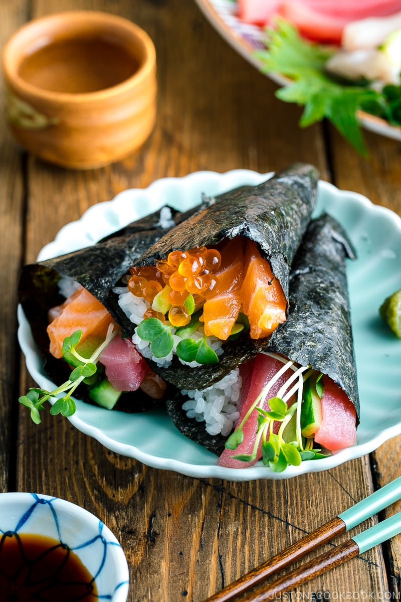

Rinse the rice in a strainer or colander under cold running water until the water runs clear.
Combine rice and water in a saucepan over medium-high heat and bring to a boil. Reduce heat to low, cover,
and cook until rice is tender and all water has been absorbed, about 20 minutes. Remove from stove and set
aside until cool enough to handle.
Meanwhile, combine rice vinegar, oil, sugar, and salt in a small saucepan over medium heat. Cook until the
sugar has dissolved. Allow to cool. Then stir into the cooked rice. While mixture will appear very wet at
first, keep stirring and rice will dry as it cools.
Then stir into the cooked rice. While mixture will appear very wet at first, keep stirring and rice will dry
as it cools.
Enjoy!
Nigiri
Fillings
Tamagoyaki
Salmon
Shrimp
Yellowtail
Freshwater eel
Instructions
Prepare a small bowl of ice water with a splash of rice vinegar.
Dip your hands into the water and use your damp hands to grab a small ball of sushi rice.
Using your hands, form the rice into a rectangle about as long as one slice of fish.
Using a chopstick, place a small dab of wasabi paste on the center of the rice.
Top the rice ball with a slice of fish and gently squeeze the rice and fish together in one hand, using
the index finger of your other hand to keep the fish in place.
Repeat steps 7-10 with the remaining fish and rice.
Sashimi
Fillings
Ahi (yellowfin tuna)
Akagai (surf clam)
Saba (mackerel)
Sake (salmon)
Uni (sea urchin)
Instructions
Get your fish.
Pat the fish dry with a paper towel. Add 1 teaspoon salt (per pound) and let it sit for 20 minutes.
You will see that water will start coming out.
Pay fish dry with a paper towel, and store in a freezer bag.
Freeze fish for at least 7 days at 4°F (-20°C) to a month to kill parasites.
When you're ready to eat the fish, defrost in the refrigerator the night before.
Take fish out of the refrigerator before eating and pat dry with a paper towel. Slice and serve. I
like to eat with sushi rice and dip with wasabi & soy sauce. If you have salmon skin left, don't throw
it away. Fry in some oil for 5-7 minutes until crispy. It tastes like chips!
Optional: I served the fish sashimi with yuzu aioli for a slight citrus note. You can also serve the
sashimi with lemon, cucumbers, and avocado.
Maki
Fillings
Cucumber, avocado, and imitation crab (California Roll)
Cucumber, avocado, and imitation crab (California Roll)
Avocado, tomato, red onion, and green pepper
Mango and red onion
Crab, green onion, and sriracha
Instructions
Place your nori, shiny side down, on the bamboo rolling mat.
Cover 2/3 of the nori (from the short end) with 1/3 - 1/2 c sushi rice. You'll want the rice layer about
1/8" thick. If the rice is too sticky to spread easily, moisten your fingers with water before
spreading.
Lay filling ingredients in a nice line, 1/3 of the way up the nori.
Take the bamboo mat and gently pull the bottom section (with just 1/3 of rice) up over the filling.
Continue to roll the sushi, pulling the mat straight away from you to coax a nice roll. Once the roll is
complete, pick up the mat with the roll and press firmly. This will press the rice in to position, and
the last naked bit of nori will stick to itself, sealing the roll.
Cut your roll using a large, sharp knife. If you find things sticking to the knife as you cut, moisten
it slightly with a little water.
Serve with pickled ginger, soy sauce, and/or wasabi as desired.
Uramaki
Fillings
Instructions
Spread rice evenly over nori, sprinkle sesame seeds, and cover with plastic wrap.
Flip it so the plastic wrap and rice are on the bottom. Arrange the leafy greens, carrot strips,
avocado, and mayonnaise on the nori.
Roll from the front, applying gentle pressure to shape the roll.
Prepare a damp cloth (or kitchen towel) and a very sharp knife to cut the sushi rolls into equal pieces.
Temaki

Fillings
Amaebi (sweet shrimp)
Hamachi (yellowtail)
Hotate (scallop)
Ikura (salmon roe)
Kanpachi (amberjack)
Maguro (tuna)
Salmon
Tai (sea bream/red snapper)
Tobiko (flying fish roe)
Toro (fatty tuna) or Chutoro (medium fatty tuna)
Uni (sea urchin)
Avocado
Cucumber
Lettuce
Radish sprout (kaiware daikon)
Shiso leaves
Yellow daikon pickles (takuan)
Chicken Teriyaki
Chicken Kaarage
Chicken Katsu
Corn
Ebi Fry
Grilled Unagi
Ground Chicken Soboro
Imitation crab sticks (kanikama)
Mango
Natto (fermented soybean)
Sausages
Shrimp (boiled)
Shrimp Tempura
Sweet Rolled Omelet (Atsuyaki Tamago)
Tuna mayo
Umeboshi (pickled plums) or Neri Ume (pickled plum paste)
Instructions
Cut a square nori sheet in half (restaurant-style) or quarter (more home-style) and place it, shiny side
down, on your palm.
Roll the bottom left corner up to the middle of the top edge of the nori to form a triangle, and
continue rolling until you form a cone shape.
Put a piece of rice on the tip of the nori to secure the folds. Enjoy!
Gyoza
Ingridients
Green cabbage (¼ large head)
1 tsp Diamond Crystal kosher salt (for salting the cabbage)
2 green onions/scallions
2 shiitake mushrooms
2 cloves garlic
1 tsp ginger (grated, with juice; from a 1-inch, 2.5-cm knob)
250g ground pork
2 tsp sake (to remove the pork's gamey taste; optional)
2 tsp toasted sesame oil
2 tsp soy sauce
⅛ tsp freshly ground black pepper
1 package gyoza wrappers (52 sheets per 10-oz/284-g package; or make my homemade Gyoza Wrappers)
Water (to fold and seal the wrappers)
1 tbsp neutral oil
4 tbsp water
1 tsp toasted sesame oil
Rice vinegar (unseasoned) (1 tbsp per serving)
Soy sauce (1 tbsp per serving)
la-yu (Japanese chili oil) (⅛ tsp per serving; optional; Japanese chili oil is not too spicy; or make my
Homemade La-yu)
Instructions
To make the filling
Discard the thick core of green cabbage and cut it into thin strips about ⅓-inch (1 cm) wide.
Finely chop the strips crosswise into very small pieces, especially the thick white parts of the leaves.
Then, run your knife through the cabbage to mince it finer.
Sprinkle the minced cabbage with 1 tsp Diamond Crystal kosher salt and massage together with your hands.
Transfer it to a bowl and set aside until the cabbage is wilted. Tip: Alternatively, you can blanch or
microwave the cabbage for a minute or two to soften the thick and hard leaves. Or, you can skip wilting
altogether.
Mince 2 green onions/scallions into small pieces.
Remove the stems from 2 shiitake mushrooms and mince the caps into small pieces.
Grate the ginger with a ceramic grater and add 1 tsp ginger (grated, with juice) to a small plate. Mince or
press 2 cloves garlic (I use a garlic press) and add to the plate.
Combine the green onions, shiitake mushrooms, and ½ lb ground pork in a large bowl. Now, add the seasonings:
2 tsp sake, 2 tsp toasted sesame oil, 2 tsp soy sauce, and ⅛ tsp freshly ground black pepper.
Mix well and knead the mixture with your hand (I wear plastic disposable gloves) until it becomes sticky and
pale in color.
Next, squeeze the water out from the salted cabbage and add to the meat mixture.
Knead the mixture again with your hand to evenly distribute the cabbage into the meat.
To fold the Gyoza
Prepare a small bowl of water and a baking sheet either lined with parchment paper or dusted with 2 Tbsp
potato starch (or cornstarch). Open 1 package gyoza wrappers and cover them with a damp towel or plastic
wrap at all times so they don't dry out.
Place one wrapper in the palm of your non-dominant hand (left hand for me). Use a 1 Tbsp cookie scoop to
place a small amount of filling in the center of the wrapper. Do not overstuff. (If you're new to gyoza
making, use a scant 1 Tbsp of filling.) Flatten it with the scooper bowl, making sure to press out any air
pockets in the filling.
Dip one finger in the water and use it to moisten a circle around the outer ¼ inch (6 mm) of the wrapper.
Fold the wrapper in half over the filling. Pinch the wrapper together at the top center of the half circle,
but don't seal it yet.
This recipe shares the folding method with the pleats leaning toward the center. If you want the pleats
leaning toward one side, check out my How to Fold Gyoza post.
Start on the right side near the top center. To make the first pleat, use your right thumb and index finger
to fold the wrapper's top half into a pleat that leans toward the center. Use your left thumb and index
finger to press the folded pleat tightly against the back half of the wrapper.
Repeat folding along the right side about once every ¼ inch (6 mm), making 3-4 pleats total.
Press down the pleats to seal any gap.
Continue pleating the left side of the gyoza, starting near the top center. To make the first pleat, use
your left thumb and index finger to fold the wrapper's top half into a pleat that leans toward the center.
Use your right thumb and index finger to press the folded pleat tightly against the back half of the
wrapper.
Repeat folding along the left side about once every ¼ inch (6 mm), making 3-4 pleats total.
Press the pleats one last time.
Evenly distribute the filling and shape the gyoza to create a flat side on the bottom.
Place your finished gyoza on the baking sheet and cover with plastic wrap to avoid drying. Repeat to fold
the remaining wrappers.